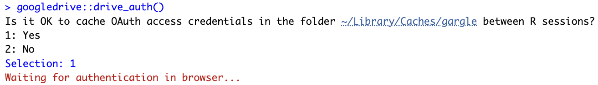

We try to practice what we preach, so we include below the code we use to download the registration data and visualize it. Click on the code arrow to show or hide the code. The data file itself remains private. We have added csv/ to the .gitignore file so that the data remains available only to users who have it locally on their computers.
Note
Rick Gilmore has stored his Gmail account information in an environment variable called GMAIL_SURVEY.
To do something similar, use the usethis package to open your .Renviron variable.
usethis::edit_r_environ()
Add an entry like GMAIL_SURVEY="your.google.acct@gmail.com" to the file. Save it, and restart R.
Then, run the following line in your console and select ‘1’ to initiate a Google authentication screen in browser:
googledrive::drive_auth()
You will see something like this:

In your browser, grant access to Tidyverse API Packages
We download the data as a CSV (if params$update_data == TRUE).
• 'Data Management Workshop Spring 2024: Registration (Responses)'
<id: 1q4teLeHZdW644ri2hEBtfmyNFncK4pSP7T-wuN3j4No>
Saved locally as:
• 'csv/data-mgmt-wksp.csv'
Data updated.
We load the saved CSV.
Code
if (update_figs) { registrations <- readr::read_csv("csv/data-mgmt-wksp.csv", show_col_types =FALSE)}
Then we clean the data by renaming the variables, dropping the “no’s”, wrangling the unit names, and adding a college variable.
Code
registrations_clean <- registrations |> dplyr::rename(timestamp ="Timestamp",email ='Email Address',attend ="Will you attend the workshop on Wednesday, March 27, 2024?",name ="What is your name?",unit ="What is your department or unit?",position ="What is your current position?",have_case_study ="Do you have a project or dataset that you would like to have considered for a hands-on case study?",case_study_details ="If yes, in a sentence or two, please describe your project or dataset.",comments ="Any comments?" ) |># Remove duplicate rows dplyr::distinct() |># Convert timestamp into proper dates dplyr::mutate(timestamp = lubridate::mdy_hms(timestamp,tz ="America/New_York")) |># Normalize unit names dplyr::mutate(unit = dplyr::recode( unit,`ESM-Ecosystem Science and Mgmt`="Ecosystem Science & Mgmt",`Earth and Environmental Systems Institute`="Earth & Environmental Systems Institute",`Earth and Environmental Systems Institute`="Earth & Environmental Systems Institute",`Civil and Environmental Engineering`="Civil & Environmental Engineering",`Civil and Environmental Eng`="Civil & Environmental Engineering",`FOOD SCIENCE`="Food Science",`Earth and Mineral Sciences, Energy Institute`="Energy Institute",`Center for Healthy Aging / HHD`="Center for Healthy Aging",`BMB`="Biochemistry & Molecular Biology",`Spanish, Italian and Portuguese`="Spanish, Italian, & Portuguese",`Spanish, Italian, and Portuguese`="Spanish, Italian, & Portuguese",`SIP`="Spanish, Italian, & Portuguese",`Department of Nutritional Sciences`="Nutritional Sciences",`Department of Medicine, Division of Endocrinology`="Medicine",`Nutrition`="Nutritional Sciences",`Department of Statistics`="Statistics",`RPTM`="Recreation, Park, & Tourism Management",`Kinesiology & Developmental Psychology`="Kinesiology",`Educational psychology`="Educational Psychology",`Clinical Psychology`="Psychology",`Communication Sciences and Disorders`="Communication Sciences & Disorders" ) ) |># Drop no attends dplyr::filter(attend =="Yes") |># Add college dplyr::mutate(college = dplyr::case_match( unit,"Statistics"~"ECoS","Biology"~"ECoS","Biochemistry & Molecular Biology"~"ECoS","Physics"~"ECoS","Chemistry"~"ECoS","Astronomy & Astrophysics"~"ECos","Psychology"~"CLA","Spanish, Italian, & Portuguese"~"CLA","Research Informatics and Publishing"~"Libraries","Political Science"~"CLA","Applied Linguistics"~"CLA","Global Languages & Literatures"~"CLA","Sociology"~"CLA","English"~"CLA","C-SoDA"~"CLA","Office of Digital Pedagogies and Initiatives"~"CLA","Asian Studies"~"CLA","Anthropology"~"CLA","Linguistics"~"CLA","Center for Language Science"~"CLA","Foreign Languages"~"CLA","IST"~"IST","Chemical Engineering"~"Eng","Civil & Environmental Engineering"~"Eng","Material Science and Engineering"~"Eng","Engineering Science & Mechanics"~"Eng","Biomedical Engineering"~"Eng","Mechanical Engineering"~"Eng","Nutritional Sciences"~"HHD","HDFS"~"HHD","Kinesiology"~"HHD","Recreation, Park, & Tourism Management"~"HHD","Bellisario College of Communication"~"Comm","Marketing"~"Smeal","Food Science"~"Ag","Ecosystem Science & Mgmt"~"Ag","Entomology"~"Ag","Plant Pathology & Environmental Microbiology"~"Ag","Plant Science"~"Ag","Neuroscience"~"Med","Medicine"~"Med","College of Human and Health Development"~"HHD","Center for Healthy Aging"~"HHD","Earth & Environmental Systems Institute"~"EMS","Energy Institute"~"EMS","Nursing"~"Nursing","Educational Psychology"~"Ed","Communication Sciences & Disorders"~"HHD" ),.default ="Unknown",.missing ="Unknown" )
The following is used to modify the above code to capture new unit names, clean/normalize them, and assign them to colleges.
Figure 5: Do registrants have a possible case study?
Source Code
---title: ""format: html: code-fold: true code-tools: trueparams: update_data: yes---## Registrant dataWe try to practice what we preach, so we include below the code we use to download the registration data and visualize it.Click on the `code` arrow to show or hide the code.The data file itself remains private.We have added `csv/` to the `.gitignore` file so that the data remains available only to users who have it locally on their computers.::: {.callout-note}Rick Gilmore has stored his Gmail account information in an environment variable called `GMAIL_SURVEY`.To do something similar, use the `usethis` package to open your `.Renviron` variable.```usethis::edit_r_environ()```Add an entry like `GMAIL_SURVEY="your.google.acct@gmail.com"` to the file.Save it, and restart R.Then, run the following line in your console and select '1' to initiate a Google authentication screen in browser:```googledrive::drive_auth()```You will see something like this:In your browser, grant access to Tidyverse API Packages:::We download the data as a CSV (if `params$update_data == TRUE`).```{r set-up-update-data}library(ggplot2)if (!dir.exists('csv')) {message("Creating missing `csv/`.")dir.create("csv")}update_figs =TRUEif (params$update_data) {options(gargle_oauth_email =Sys.getenv("GMAIL_SURVEY")) googledrive::drive_auth() new_fn <-"csv/data-mgmt-wksp.csv"file.rename(new_fn, "csv/_data-mgmt-wkshp.csv") googledrive::drive_download("Data Management Workshop Spring 2024: Registration (Responses)",path = new_fn,type ="csv",overwrite =TRUE )message("Data updated.")} else {if (!file.exists("csv/data-mgmt-wksp.csv")) {warning("File not found: 'csv/data-mgmt-wksp.csv'") update_figs =FALSE } else {message("Using previously stored data.") }}```We load the saved CSV.```{r load-registration-data}if (update_figs) { registrations <- readr::read_csv("csv/data-mgmt-wksp.csv", show_col_types =FALSE)}```Then we clean the data by renaming the variables, dropping the "no's", wrangling the unit names, and adding a `college` variable.```{r clean-registration-data, eval=update_figs}registrations_clean <- registrations |> dplyr::rename(timestamp ="Timestamp",email ='Email Address',attend ="Will you attend the workshop on Wednesday, March 27, 2024?",name ="What is your name?",unit ="What is your department or unit?",position ="What is your current position?",have_case_study ="Do you have a project or dataset that you would like to have considered for a hands-on case study?",case_study_details ="If yes, in a sentence or two, please describe your project or dataset.",comments ="Any comments?" ) |># Remove duplicate rows dplyr::distinct() |># Convert timestamp into proper dates dplyr::mutate(timestamp = lubridate::mdy_hms(timestamp,tz ="America/New_York")) |># Normalize unit names dplyr::mutate(unit = dplyr::recode( unit,`ESM-Ecosystem Science and Mgmt`="Ecosystem Science & Mgmt",`Earth and Environmental Systems Institute`="Earth & Environmental Systems Institute",`Earth and Environmental Systems Institute`="Earth & Environmental Systems Institute",`Civil and Environmental Engineering`="Civil & Environmental Engineering",`Civil and Environmental Eng`="Civil & Environmental Engineering",`FOOD SCIENCE`="Food Science",`Earth and Mineral Sciences, Energy Institute`="Energy Institute",`Center for Healthy Aging / HHD`="Center for Healthy Aging",`BMB`="Biochemistry & Molecular Biology",`Spanish, Italian and Portuguese`="Spanish, Italian, & Portuguese",`Spanish, Italian, and Portuguese`="Spanish, Italian, & Portuguese",`SIP`="Spanish, Italian, & Portuguese",`Department of Nutritional Sciences`="Nutritional Sciences",`Department of Medicine, Division of Endocrinology`="Medicine",`Nutrition`="Nutritional Sciences",`Department of Statistics`="Statistics",`RPTM`="Recreation, Park, & Tourism Management",`Kinesiology & Developmental Psychology`="Kinesiology",`Educational psychology`="Educational Psychology",`Clinical Psychology`="Psychology",`Communication Sciences and Disorders`="Communication Sciences & Disorders" ) ) |># Drop no attends dplyr::filter(attend =="Yes") |># Add college dplyr::mutate(college = dplyr::case_match( unit,"Statistics"~"ECoS","Biology"~"ECoS","Biochemistry & Molecular Biology"~"ECoS","Physics"~"ECoS","Chemistry"~"ECoS","Astronomy & Astrophysics"~"ECos","Psychology"~"CLA","Spanish, Italian, & Portuguese"~"CLA","Research Informatics and Publishing"~"Libraries","Political Science"~"CLA","Applied Linguistics"~"CLA","Global Languages & Literatures"~"CLA","Sociology"~"CLA","English"~"CLA","C-SoDA"~"CLA","Office of Digital Pedagogies and Initiatives"~"CLA","Asian Studies"~"CLA","Anthropology"~"CLA","Linguistics"~"CLA","Center for Language Science"~"CLA","Foreign Languages"~"CLA","IST"~"IST","Chemical Engineering"~"Eng","Civil & Environmental Engineering"~"Eng","Material Science and Engineering"~"Eng","Engineering Science & Mechanics"~"Eng","Biomedical Engineering"~"Eng","Mechanical Engineering"~"Eng","Nutritional Sciences"~"HHD","HDFS"~"HHD","Kinesiology"~"HHD","Recreation, Park, & Tourism Management"~"HHD","Bellisario College of Communication"~"Comm","Marketing"~"Smeal","Food Science"~"Ag","Ecosystem Science & Mgmt"~"Ag","Entomology"~"Ag","Plant Pathology & Environmental Microbiology"~"Ag","Plant Science"~"Ag","Neuroscience"~"Med","Medicine"~"Med","College of Human and Health Development"~"HHD","Center for Healthy Aging"~"HHD","Earth & Environmental Systems Institute"~"EMS","Energy Institute"~"EMS","Nursing"~"Nursing","Educational Psychology"~"Ed","Communication Sciences & Disorders"~"HHD" ),.default ="Unknown",.missing ="Unknown" )```The following is used to modify the above code to capture new unit names, clean/normalize them, and assign them to colleges.```{r, eval=update_figs}college_na <-is.na(registrations_clean$college)registrations_clean$unit[college_na]```### Time series```{r fig-registration-time-series, fig.cap="Time series of registrations from 2014-02-13 to present", eval=update_figs}registrations_clean |> dplyr::arrange(timestamp) |> dplyr::mutate(resp_index =seq_along(timestamp)) |>ggplot() +aes(x = timestamp, y = resp_index, color = position) +geom_point() +# geom_line(group = 1) +theme(axis.text.x =element_text(angle =90)) +labs(x =NULL, y ='n') +theme(legend.position ="bottom", legend.title =element_blank())```### Unit & College```{r fig-registrations-by-dept, fig.cap="Registrations by department", eval=update_figs}registrations_clean |> dplyr::filter(!is.na(unit)) |> dplyr::arrange(desc(unit)) |>ggplot() +aes(x = unit, fill = college) +geom_bar() +theme(legend.position ="bottom", legend.title =element_blank()) +coord_flip()``````{r fig-registrations-by-college, fig.cap="Registrations by college", eval=update_figs}registrations_clean |>ggplot() +aes(x = college, fill = college, color = college) +geom_bar() +theme(axis.text.x =element_blank()) +theme(legend.position ="bottom", legend.title =element_blank())```### Position```{r fig-registrations-by-position, fig.cap="Registrations by position", eval=update_figs}registrations_clean |>ggplot() +aes(x = position, fill = position) +geom_bar() +theme(axis.text.x =element_blank()) +theme(legend.position ="bottom", legend.title =element_blank())```### Case study```{r fig-registrations-has-case-study, fig.cap="Do registrants have a possible case study?", eval=update_figs}registrations_clean |>ggplot() +aes(x = have_case_study) +geom_bar()```